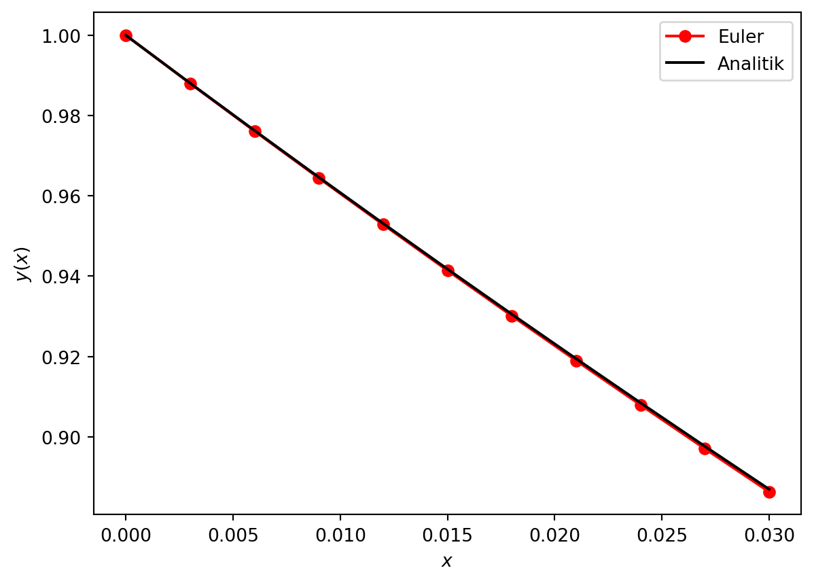

Euler yöntemi diferansiyel denklem çözümü için kullanılan en basit yöntemdir.
Alternatif isimleri Euler-Cauchy veya nokta-eğim (point-slope) yöntemidir.
Kabaca türevin tanımını kullanır.
\[
y'(x)= \frac{y(x+h)-y(x)}{h}
\]
Çözüm olarak Taylor serisini kullanacağız. \[
y(x+h)=y(x)+h\times y'(x)+\cdot
\]
Amacımız başlangıç koşulundan itibaren adım adım \(y(x)\) fonksiyonunu bulmaktır. \(x\) noktasından \(x+h\) noktasına ilerlediğimiz için bu yöntem “ileri adım” yöntemidir.
Not
Alternatif olarak her (x+h) noktası için integral de alabiliriz ancak diferansiyel denklem çözerken sayısal integral alma yöntemleri kullanmak sakıncalıdır.
Hata Analizi
Bir uygulamada Taylor serisi kullanılırsa hata analizi aşağıdaki gibi yapılır. Farz edelim ki \(f(x+h)\) fonksiyonunu \(f(x)\) etrafında seriye açıyoruz ve \(n\)’nci dereceden terimden sonrasını atıyoruz. \(E_{n}\) terimi ise kestiğimiz terimden sonraki terimler yani hata terimi olarak tanımlansın.
Hata terimi \(E_{n}\)’e kesme hatası (truncation error) adı verilir. Bu hatanın en büyük değeri Taylor teoreminden bulunabilir.
\[
E_{n}=f^{n+1}(\xi)\frac{h^{n+1}}{(n+1)!}
\]
Burada \(\xi\), \(x\) ile \(x+h\) arasında bir değerdir. Bu değer ulaşılabilir değilse kesme hatasını belirleyen terim \(h\) adım aralığı olacaktır. Yani
\[
E_{n}=\mathcal{O}(h^{n+1})
\]
Euler Yöntemi ile Çözümde Hata Analizi
Euler yöntemi kullanılırken her bir adımdaki kesme hatası \(\mathcal{O}(h^2)\)’dir çünkü ikinci dereceden türev terimlerini ihmal ediyoruz. Her \(h\) adımda bu hata üst üste binecektir. Yani denklem \(n\) adımda çözülüyorsa kesme hatası da \(n\) kere tekrarlanacaktır.
Euler yöntemi ile diferansiyel denklem çözümünde kesme hata payı \(h\) adım aralığı ile orantılı olacaktır.
Euler Yönteminin Geometrik Tasviri
Basitlik için çözmek istediğimiz \(y(x)\) fonksiyonu tek değişkene bağlı olsun. Bu fonksiyonun \(x\) ve \(x+h\) arasındaki değişimi aşağıdaki gibi olur [1].
\[
y(x+h)=y(x)+h\times y'(x)
\]
Buradan şu sonuç çıkarılabilir. Bulmak istediğimiz \(y(x+h)\) terimi, \(y(x)\) terimine ve o noktadaki eğiminin (türevinin) adım aralığı kadar katının toplamına eşittir.
Euler Yönteminin Geometrik Tasviri
Euler Yönteminin Kodlanması
add_coz_euler adlı fonksiyon bilYonMod.py modülünde tanımlıdır.
Not
add_coz_euler fonksiyonunu inceleyiniz.
Dikkat
add_coz_euler(fonk_y_x, xBaslangic, xBitis, yBaslangic, adimSayisi) fonksiyonunu çağırırken diferansiyel denklemin (\(y'(x)=f(y,x)\)) sağ tarafında yer alan ve çözmeniz gereken fonksiyonda, \(f(y,x)\), önce y ardından x tanımlanmalıdır. Yani kodda fonksiyon \(f(y,x)\) şeklinde yazılmalıdır. Burada \(y\) değişkeni \(y(x)\) olarak tanımlanır, \(x\) ise bağımsız değişkendir.
Aşağıdaki diferansiyel denklemi çözen bir örneği inceleyelim.
################################################## Modül yolunu varsayılan yol olarak ekleme ve modülü içe aktarmaimport osimport sys# Bu dosyanın bulunduğu dizini alcurrent_dir = os.path.abspath('')# 3 üst dizine çıkmodule_dir = os.path.join(os.path.abspath(os.path.join(current_dir, os.pardir, os.pardir, os.pardir)), 'moduller')# moduller dizinini yol olarak eklesys.path.append(module_dir)# bilYonMod.py modülünü içe aktarimport bilYonMod as bym################################################import numpy as npimport matplotlib.pyplot as plt# Fonksiyondef fonk_y_x(y, x):return-4*y + x**2# Başlangıç koşullarıx0 =0y0 =1xSon =0.03n =10# ÇözxTum, yTum = bym.add_coz_euler(fonk_y_x, x0, xSon, y0, n)# Analitik çözümyAnalitik=(31/32)*np.exp(-4*xTum) + (1/4)*(xTum**2) - (1/8)*xTum + (1/32)# Çizplt.plot(xTum, yTum, 'o-', color='r', label='Euler')plt.plot(xTum, yAnalitik, 'k', label='Analitik')plt.xlabel('$x$')plt.ylabel('$y(x)$')plt.legend()plt.show()

Problemler
Problem 1
Basit bir RC devresi ele alalım. Bu devrede voltaj kaynağı olmasın, kondansatör \(t=0\) s’de \(V_{0}=10\) V gerilime sahip olsun. Devrede \(R=220\) k \(\Omega\) direnci ve \(C=10\)\(\mu\) F kondansatörü olsun. Devre bu haldeyken devreyi tamamlayalım. Devrenin voltajı-zaman grafiğini Euler yöntemi kullanarak çiziniz.
\[
C\frac{dV}{dt}+\frac{V}{R}=0
\]
Analitik çözüm: \(V(t) = V_{0}e^{-t/RC}\)
Problem 2
Thoryum-234’ün yarılanma ömrü \(\tau=24.1\) gündür. \(N_{0}=150\) g saf Thoryum-234 izotopu \(100\) gün bekletilmektedir. İçerisinde kalan içerisinde kalan Thoryum-234 miktarı-zaman grafiğini Euler metodu kullanarak çiziniz.